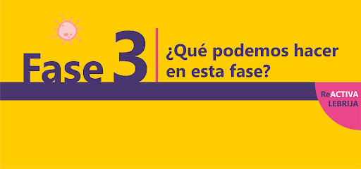

Fase 3 de la desescalada
Córdoba pasará el próximo lunes 8 de junio a la fase 3 de la desescalada establecida con motivo de la crisis del coronavirus. Esta nueva fase conlleva una mayor flexibilidad en la movilidad general, aunque seguirá siendo obligatorio el uso de mascarillas como hasta ahora. También se amplía el contacto social y se podrán abrir todos los establecimientos y locales comerciales con independencia de su superficie, siempre que se respete un aforo máximo del 50%.
"Andalucía siempre ha merecido avanzar unida en la desescalada", ha dicho Moreno Bonilla, que ha asegurado que "tenemos que salir juntos de esta crisis" y ha elogiado el "comportamiento ejemplar de los andaluces y el trabajo de los sanitarios". El esfuerzo está mereciendo la pena y ha dado resultado, al tiempo que ha recordado la menor incidencia que ha tenido el covid-19 en Andalucía.
Moreno Bonilla ha insistido en que los andaluces han de ser "responsables y prudentes" y les ha pedido a los ciudadanos que vayan "poco a poco, paso a paso, si actuamos con ansiedad pagaremos las consecuencias dando pasos atrás". El presidente de la Junta de Andalucía asegura que si se produjera un rebrote de los contagios, "el gobierno actuaría, si en el futuro es necesario limitar la movilidad lo haremos".

Se puede:
-Grupos de hasta 20 personas
-Bares y restaurantes
-Bodas, velatorios y lugares de culto
-Ámbito laboral
-Comercio y centros comerciales
-Cines, teatros y auditorios
-Museos y bibliotecas
Selectividad este año
La Consejería de Salud y Familias ha proporcionado unas instrucciones a la Consejería de Economía, Conocimiento, Empresa y Universidad para el desarrollo los próximos 7, 8 y 9 de julio de las pruebas presenciales de Evaluación de Bachillerato para el Acceso a la Universidad (PevAU), antigua Selectividad, y que recogen, entre otras cuestiones, que "los alumnos usen mascarillas higiénicas en todo momento" y la reducción a un tercio del aforo de las aulas.
Además, dicho documento, al que ha tenido acceso Europa Press y establece recomendaciones de prevención e higiénico-sanitarias para la protección de la salud y generales de prevención de contagios de la covid-19 durante el desarrollo de estas pruebas, apunta que habrá "una dotación de reserva de mascarillas ante situaciones específicas que necesiten dar una mascarilla a algún aspirante". No obstante el alumnado podrá no usar mascarillas cuando exista algún problema de salud acreditado que lo desaconseje o alguna necesidad de apoyo educativo reconocida que pueda interferir en su uso, concretan.
Acerca de medidas para el personal, el documento recoge, entre otras cuestiones, que "se asegurará que todos los trabajadores tengan permanentemente a su disposición en el lugar de trabajo agua y jabón o geles hidroalcohólicos o desinfectantes" y "cuando no pueda garantizarse la distancia de seguridad interpersonal de aproximadamente dos metros, se asegurará que dispongan de equipos de protección adecuados al nivel de riesgo".
Investigacion de contagios
Investigadores del Distrito Córdoba-Guadalquivir, que forman parte a su vez del Grupo de Investigación Clínico-Epidemiológica en Atención Primaria (Giceap) del Instituto Maimónides de Investigación Biomédica de Córdoba (Imibic), han llevado a cabo un estudio novedoso a nivel nacional, para determinar los síntomas más frecuentes del nuevo coronavirus en pacientes del ámbito de la atención primaria. Para ello, realizaron encuestas telefónicas entre marzo y mayo en una muestra de personas con síntomatología relacionada con covid-19, de las que 624 son de Córdoba y otras 414 de toda España, 1.038 en total. El 20,1% de los sujetos estudiados (unos 200) había dado positivo en coronavirus, tras habérsele efectuado una prueba PCR, frente a un 79,9% (los 800 restantes) que resultó negativo.
Reactivacion del turismo interior
El futuro turístico será mejor de lo que esperábamos. El vicepresidente de la Junta de Andalucía y consejero de Turismo, Regeneración, Justicia y Administración Local, Juan Marín, trajo ayer buenas noticias a la provincia de Córdoba y al sector del turismo de interior, que vaticina se recuperará «mejor de lo que creíamos». En su visita a Lucena, el vicepresidente Marín dio por hecho que habrá «una reactivación importante del turismo de interior» en Andalucía, que «hoy es el primer destino turístico a nivel mundial
En la rueda de prensa que ofreció junto al alcalde lucentino, Juan Pérez, antes de visitar, junto a responsables de la Asociación Lucena, Ciudad Accesible, el Palacio de los Condes de Santa Ana, el Castillo del Moral y la Casa de los Mora, Marín subrayó que Andalucía «hoy es el primer destino turístico a nivel mundial demandado por las agencias de viajes y los turoperadores» e insistió en que «no es España el primer país, sino Andalucía el primer destino turístico mundial», de ahí que en la Junta de Andalucía tengan «un interés muy especial en que el pasaporte sanitario se ponga en marcha
Sobre todo en el citado contexto de mayor atractivo que tiene el turismo de interior en Andalucía, Marín puso de ejemplo Lucena, que según señaló, «tiene una situación geográfica muy interesante, con un turismo basado en su patrimonio, en su cultura y, sobre todo, en un valor añadido, como es la accesibilidad», pues forma parte de esa Red de Ciudades Accesible, siendo «hoy en Andalucía todo un referente en este sector», que le genera «grandes oportunidades, a corto y medio plazo», es decir, que «no hace falta esperar a 2021
El caso de Lucena se inscribe, según argumentó el vicepresidente de la Junta de Andalucía, en esa previsión de «reactivación económica importante del turismo de interior», tal y como lo «demuestran todos los indicadores», pues, «en estas últimas semanas ha habido un incremento muy importante en el número de reservas en turismo de interior, aunque también el de sol y playa empieza a recuperarse
Programa para revitalizar el casco histórico
La primera teniente de alcalde y delegada de Turismo y Desarrollo Económico del Ayuntamiento, Isabel Albás, ha recorrido este miércoles varios establecimientos del casco histórico para tomar el pulso de cómo está funcionando la reapertura de los establecimientos hosteleros en esta zona de la ciudad, “que son clave en la reactivación y la recuperación económica de Córdoba”. Albás, que ha constatado el escaso tránsito de personas que aún hay en este enclave tan turístico, que en distintas circunstancias estaría repleto de visitantes en esta época del año, ha apuntado que es importante “llenar de vida” esta zona de la capital para que así sus restaurantes, sus comercios y sus hoteles puedan remontar la crisis.
En esta línea, ha apuntado que “ya tenemos prácticamente cerrado un programa de actividades para este verano, que vamos a dar a conocer en breve, con la intención de dinamizar la ciudad en este entorno e incentivar las visitas a nuestros monumentos y a nuestros negocios de hostelería y comercio”.
La primera teniente de alcalde ha reiterado que “los cordobeses tienen que ser los principales turistas en su tierra y reencontrarse con unas calles, unas plazas y unos rincones que en sí mismos son un tesoro”, además de “redescubrir nuestro patrimonio, que nos ha hecho mundialmente conocidos”. Albás, que ha conversado con los propietarios de restaurantes como Puerta Sevilla, Casa Mazal, Pepe el de la Judería o El Barón, ha indicado que “somos optimistas teniendo en cuenta los datos de reservas para los próximos meses en Andalucía, que sitúan a nuestra región a la cabeza de los principales destinos del mundo” y ha añadido que “estoy segura de que el turismo arrancará también con fuerza en Córdoba, donde estamos trabajando de la mano del sector para sacar adelante al que es nuestro principal motor económico”.